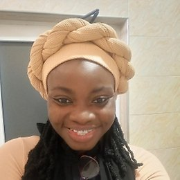

I study how the atmosphere delivers water to West Africa. From satellite rainfall and extreme storms to the floods they cause, I turn that science into early-warning tools for climate and health. L'Oréal-UNESCO For Women in Science Fellow and ICTP Associate, and a researcher on the Swedish Tropical Precipitation Tipping-Points (TPTP) project at Stockholm University.

I am a Senior Lecturer in the Department of Meteorology and Climate Science at the Kwame Nkrumah University of Science and Technology (KNUST) in Kumasi, Ghana, and a Postdoctoral Fellow on the Tropical Precipitation Tipping-Points project at the Department of Meteorology (MISU), Stockholm University. My research sits at the meeting point of satellite remote sensing, tropical rainfall, and the practical use of climate information for society.
Much of my work asks a deceptively simple question: how much rain fell, where, and can we trust the data that tells us so? I develop and validate satellite and merged rainfall products over Ghana and West Africa, study the mesoscale storms and extreme rainfall that drive flooding, and translate this into seasonal advisories and early-warning systems that farmers, forecasters, and health authorities can act on. More recently I study soil-moisture and precipitation feedbacks and convective cloud dynamics in tropical precipitation systems.
I have collaborated across African and international research networks, including the African-SWIFT weather programme, the CGIAR network and the International Institute of Tropical Agriculture (IITA), and I care deeply about building climate-science capacity led from within Africa. I am a L'Oréal-UNESCO For Women in Science Sub-Saharan Africa Fellow, an ICTP Associate, and an AGNES Fellow.
Validation, bias correction and spatial disaggregation of satellite and merged precipitation products over Ghana and West Africa.
Mesoscale convective systems, extreme-rainfall indices, and their role in the floods that affect southern West Africa.
Onset, cessation and length of the growing season, and the wet- and dry-spell advisories that guide farming decisions.
Turning flood and climate signals into anticipatory warning for health risks such as flood-driven malaria, the basis of the FLARE project.
Long-term trends and year-to-year variability of extreme rainfall across Ghana and the wider region.
Mentoring students and early-career researchers, with a focus on women in climate science across African institutions.
Full publication list on Google Scholar and ORCID.
Flood-Linked Alert for Regional Epidemics, a satellite-driven early-warning system linking flood detection to disease-outbreak risk in Sub-Saharan Africa. A research initiative I lead, currently at proposal and proof-of-concept stage.
Tropical Precipitation Tipping-Points, a Swedish project at Stockholm University studying soil-moisture and precipitation feedbacks and convective cloud dynamics.
Seasonal and wet-and-dry-spell advisories to guide farming decisions in northern Ghana.
Competitive international programme supporting outstanding researchers in developing countries to engage with global scientific networks.
Tropical Precipitation Tipping-Points project, MISU, Stockholm University, on soil-moisture and precipitation feedbacks and convective cloud dynamics.
Sub-Saharan Africa Fellowship, selected among the top five postdoctoral researchers from a competitive continental pool.
Fellowship supporting women scientists working on climate change, for research on climate variability in Africa.
Global Challenges Research Fund support for research on the impacts of climate change across the African continent.
African-German Network of Excellence in Science, strengthening research collaboration between African and German institutions.
I welcome collaboration on satellite rainfall, flood early warning, and climate-health research, and enquiries from prospective students.